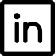

Hackathon
Réalisé en octobre 2022

Hackathon sur le thème de l'Europe et le lien entre l'Europe et les jeunes.
Consigne : comment faire pour intéresser les jeunes sur le rôle de l'Union Européenne dans notre
vie ?
Ce hackathon a été réalisé avec l'aide de Meta et de l'institut Jean Monnet.
Pendant une semaine, avec les étudiants en 2ème année du Programme Grande Ecole d'HETIC, nous
devions travailler sur un thème précis (ici l'environnement).
Quel était notre projet ?
Pour répondre à la problématique, pour le thème de l'environnement, nous avons imaginé une
clean-walk (marche pendant laquelle on ramasse des déchets) qui serait organisée simultanément dans
plusieurs pays memebres de l'Union Européenne. Ce serait la "Walk for Europe".
Le but de ce projet était, dans un temps limité (une semaine), de devoir
imaginer une solution à grande échelle pour répondre à une problématique avec de vrais enjeux. Le
but était aussi d'apprendre à travailler avec d'autres personnes et d'apprendre quelques bases de
design et de communication pour vendre au mieux notre projet.
Me contacter
- Votre nom :
- Votre mail :
- Votre message :
Mail : leonielaurent.31@gmail.com
Téléphone : 07-68-05-34-13
